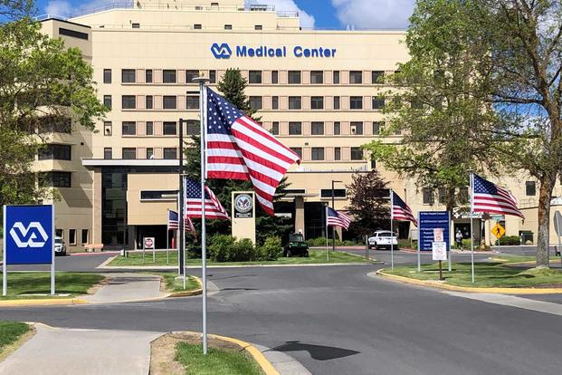

Solutions
Veterans Affairs offers many mental health services such as; outpatient treatment, inpatient treatment, rehabilitation programs, primary care, and the Veterans mental health crisis hot line. The theme that continues the most in terms of Veterans Affairs services is how quick the treatment services are conducted. Manning is a significant issue for medical personnel for VA hospitals.
In 2024, the Office of Healthcare Inspection reported that 86 percent of facilities were experiencing a shortage of medical officers, while 82 percent lacked sufficient nursing staff. Notably, psychology was frequently cited as facing a severe shortage of personnel. Veterans often experience emergencies or need treatment for minor medical issues, yet are unable to see their primary care physician. On average, most veterans see their primary doctor only about twice a year. For every one veteran doctor, there can be upwards of 1,200 patients assigned—just to that one physician. In many cases, veterans are referred to civilian physicians for specialized care.
Evolving Policies Within Veteran's Affairs Health Services
The Veterans Health Administration employed three hundred pharmacists to provide evidence-based in-person education about prescription drugs to medical staff. Opioid prescribing was monitored, and clinicians were equipped to monitor patients’ risk profile and history of drug abuse. However, some veterans have still complained of pain not being treated as effectively because of the non-use of opioids. These guidelines were established with good intentions.
In 2016 the CDC’s guidelines for opiates focused more on tapering and stopping the prescribing of opioid medication. With this change, there was a vagueness of what other pain treatments should be used or deterred from using.Those who were dependent on opioids turned to much worse illegal drugs. From 2016-2021, deaths from opioid misuse doubled. These guidelines did not get much improvement until 2022. In conclusion, veterans would really benefit from expanding access and knowledge about Veterans Health Services, continuing to advance provider education, and strengthening collaboration between the Department of Defense in the Veterans Health administration in terms of transitioning from active duty and opioid use prevention.
Testimonials from Veterans/Providers on Opioid Addiction Treatment At the VA
-
Organizational Issues:
In a qualitative research study conducted on the veterans/provider perspectives on the prescribing and accepting of opioids; veteran interviewees mentioned that resources were a challenge due to staffing shortages of RN's and LPN's to assist in inductions for Medications of Opioid Misuse Disorder(MOUD).Nurse Testimonial: “I’m afraid of that for the regular PACT team with only 1 RN and 1 LPN assigned and a large panel with lots of daily tasks….”
-
Veterans Starting Treatment:
Veteran 1: I was with a girl…and I made a commitment with her [to get sober] and then she passed away. And I felt that I had to stick to that commitment.
Veteran 2: “I had a sponsor at AA and he was a Veteran and he told me I should go to the VA and see if they could help me.”
-
Personal Barriers:
Veteran Interveiwees expressed throughout the proccess how providers had stereotypes on patients battling substance abuse disorders and are not comfortable setting boundaries with patientsProvider: "Most of our narcotic users are pain patients, not heroin/street drug users. The PCPs put ‘Opioid Use Disorder’in the chart per [assessment] template but don’t have the patient education discussion, so then the patients are upset when they hear about the diagnosis."
-
Veteran Patients on Opioid Treatment:
Veteran 1: "The whole time I was on methadone, I didn’t feel on top of it- the itch was always there. And that didn’t go away until I started Suboxone ten years later, and that was like night and day."
Veteran 2: "I have a condition where I have the worst pain known to man. This medication [Suboxone] keeps me feeling normal and knocks my pain down to a level I can deal with. ….It saved my life."
Present Day
In the current U.S. presidential administration, there are multiple changes being made. The main change of concern is government cuts that are affecting Veterans Affairs. Veteran’s Affairs personnel are being laid off. This includes those that research opioid addiction, cancer research, and other specialties. Allocating more funds to Veteran’s affairs for staffing and providing more resources to veterans can shorten the amount of time it takes to be seen in regards to mental health or addiction. It would also provide a higer qaulity of patient care. It would also be helpful in continually training providers on how to approach and handle substance/ prescription abuse patients and how to set proper boundaries. In the midst of the current political climate, it is significant for the Veterans Health Administration to strengthen relations with current stakeholders and engage with new partners as well. This would ensure that even with little govenrment support, Veteran's Affairs would be able to continue to research and bring about change with the opioid addiction issue. Possible organizations that could be partners/stakeholders are; the CDC, Amercian Adiction Centers, The PTSD Foundation of America, and Make the connections just to name a few.